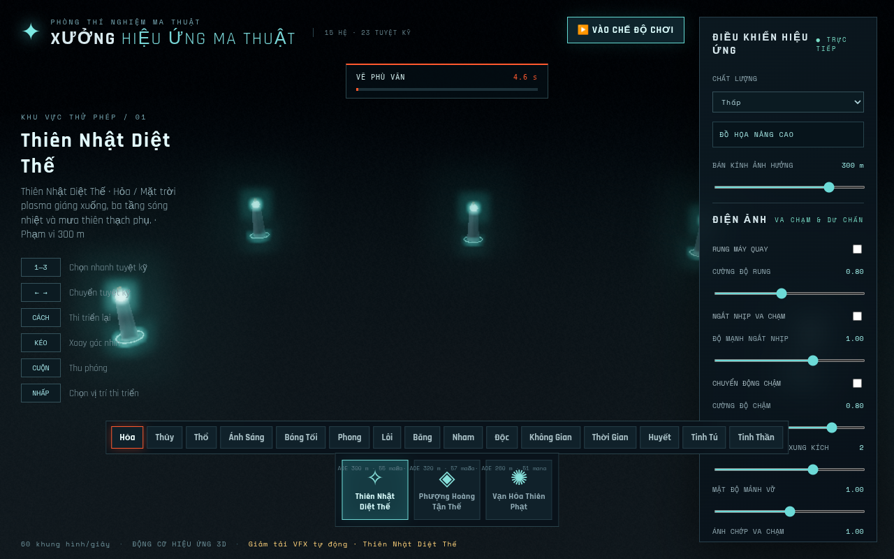
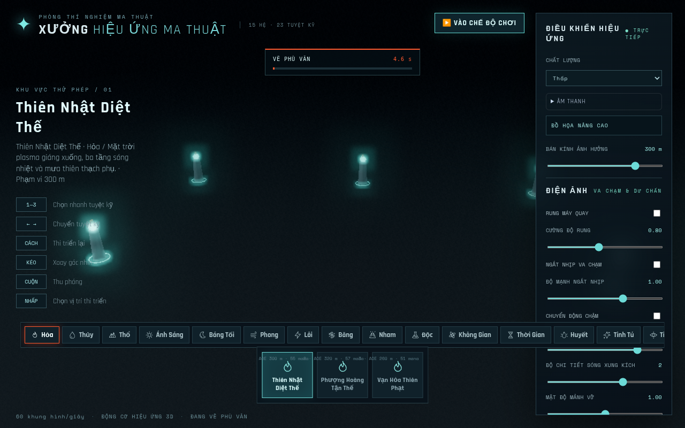
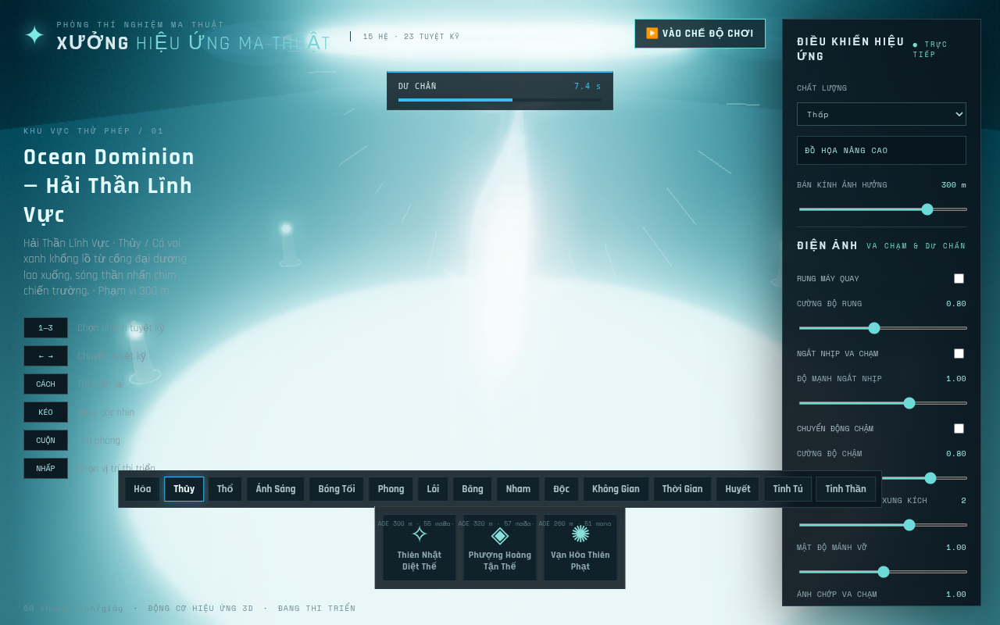
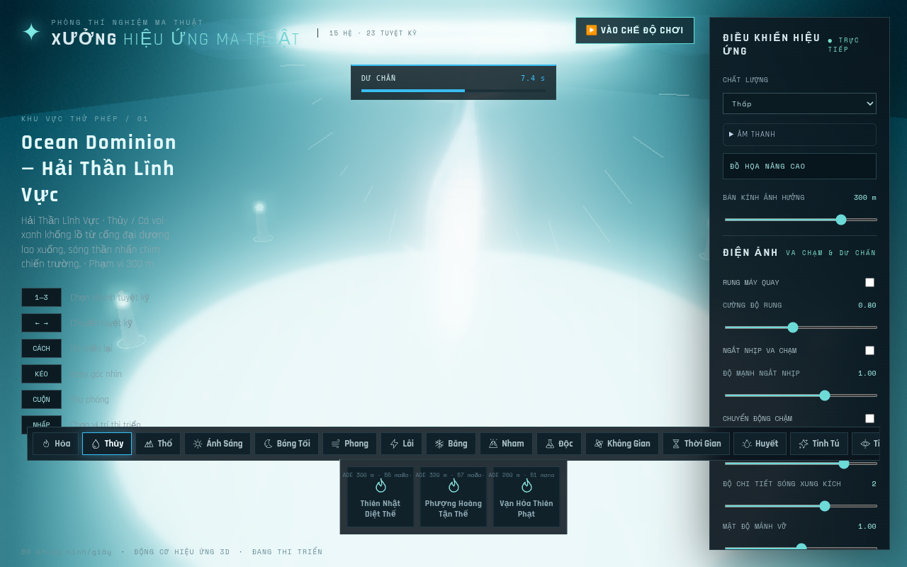
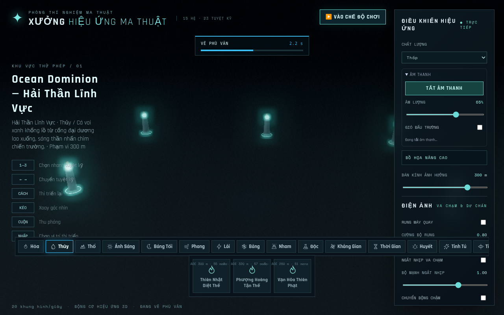

Giữ 15 hệ/23 tuyệt kỹ. Đây là bằng chứng kiểm thử local Chromium/SwiftShader, không phải Live Preview hoặc benchmark GPU thật.
Mỗi hệ 5 giây: 0 Hỏa · 5 Thủy · 10 Thổ · 15 Ánh Sáng · 20 Bóng Tối · 25 Phong · 30 Lôi · 35 Băng · 40 Nham · 45 Độc · 50 Không Gian · 55 Thời Gian · 60 Huyết · 65 Tinh Tú · 70 Tinh Thần.
Bản tham chiếu có gain riêng. Audio là tổng hợp procedural đầu tiên; cần nghe/mix nghệ thuật tiếp, không được suy chất lượng từ test.Opus/WebM gốc. Chứa master/spatial gain của game; thu riêng với video.
76.3 giây, chọn/cast Thủy và Bóng Tối, Play/MP/pause, bật âm qua gesture. Video Playwright không có audio track.




Cùng camera/preset/viewport; particle ngẫu nhiên. Vùng quá sáng vẫn còn, là nhiệm vụ kế tiếp của GĐ1.
